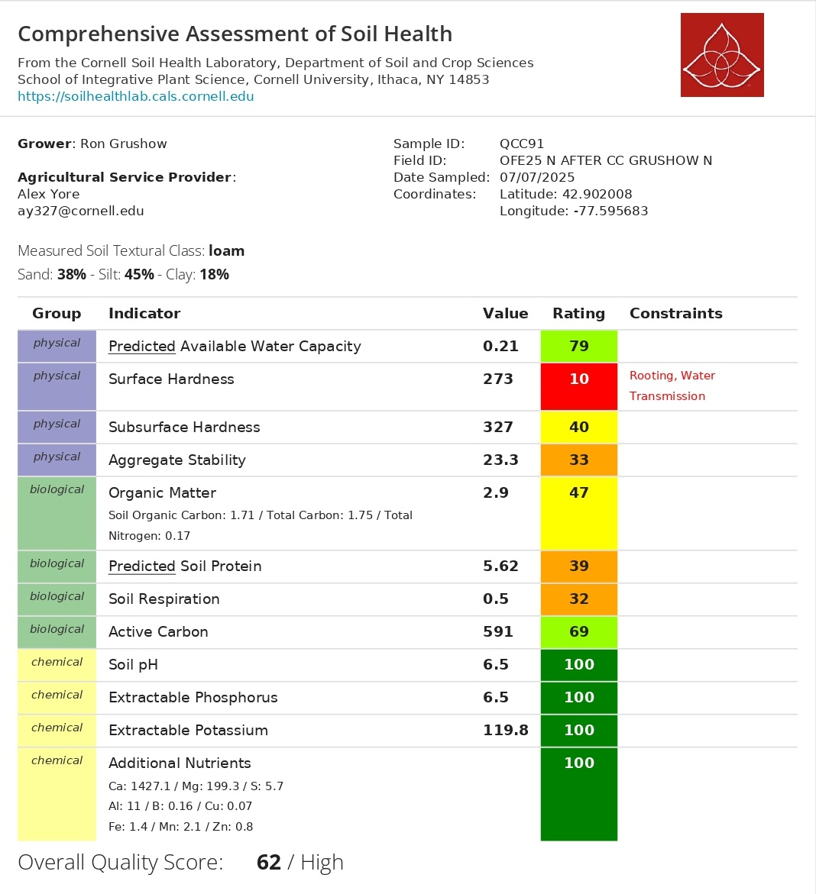

| Metric | Value | SD | n Plots | Notes |
|---|---|---|---|---|
| 🌽 Maize Biomass — Mean %N | 2.764% | ± 0.179 | 9 | Range: 2.461 – 3.027% |
| 🌽 Maize Biomass — C:N Ratio | 16.28 | ± 1.14 | 9 | Range: 14.98 – 18.33 |
| 🌱 Cover Crop — Mean %N | 2.024% | ± 0.515 | 5 | Range: 1.46 – 2.87% |
| 🌱 Cover Crop — C:N Ratio | 22.63 | ± 5.06 | 5 | low C:N — fast decomposition, good early-season N supply |
| ⚗️ N Rate Applied | 163 lb N/ac | — | — | Single rate — no treatment split |
| 🌿 Soil Health Score | 62 / 100 | — | — | Rating: High — compaction is key constraint |
YOUR OFE 2025 REPORT

Welcome to your 2025 farm report. This report summarizes field-season measurements for the Gruschow North field. Because this field operated under a single nitrogen rate of 163 lb N/ac with no treatment/control split, this is a descriptive monitoring report — rather than a comparative experiment, we characterize the crop’s nitrogen status and C:N dynamics in both maize biomass and cover crop residue, along with soil health and weather conditions for the season.

Take-home message: Maize biomass across the 9 sampled plots showed a mean tissue nitrogen of 2.764% and a C:N ratio of 16.28, consistent with a well-supplied corn crop at the 163 lb N/ac input rate. The cover crop preceding this corn showed a mean tissue N of 2.024% and a C:N of 22.63 — low C:N — fast decomposition, good early-season N supply. The field experienced a drought-free growing season through September, with mild drought emerging in October after the critical grain-fill window. Soil health scored 62/100 (High) on the Cornell assessment, with chemical indicators at 100 and surface compaction as the primary physical constraint to address.
Results Summary
This field did not have a treatment/control split. All statistics are descriptive field-level observations. No statistical comparisons between groups are reported.
🌽 C:N in Corn Biomass
Corn biomass was collected from 9 plots across Gruschow North on July 14, 2025, and sent to the laboratory for C:N analysis. This tells us how much nitrogen the plant had absorbed and incorporated into its tissue mid-season — a direct indicator of nitrogen sufficiency at the 163 lb N/ac input rate. Because there is no treatment split, we describe the field-level distribution and spatial variability across plots.
Total Nitrogen in Biomass (%N)
Mean %N — Biomass
2.764%
SD: 0.179 | SE: 0.06 | n = 9 plots
Range
2.461 – 3.027%
Min – Max across all plots
Mean %C — Biomass
44.82%
SD: 0.65
| Plot | %C | %N | C:N Ratio | Longitude | Latitude |
|---|---|---|---|---|---|
| 1 | 45.917 | 3.027 | 15.169 | -77.596 | 42.904 |
| 2 | 44.385 | 2.932 | 15.138 | -77.596 | 42.903 |
| 3 | 44.971 | 2.772 | 16.223 | -77.596 | 42.903 |
| 4 | 45.117 | 2.461 | 18.333 | -77.596 | 42.901 |
| 6 | 44.789 | 2.687 | 16.669 | -77.595 | 42.900 |
| 7 | 43.727 | 2.919 | 14.980 | -77.595 | 42.901 |
| 8 | 44.356 | 2.692 | 16.477 | -77.595 | 42.902 |
| 9 | 45.482 | 2.588 | 17.574 | -77.596 | 42.902 |
| 10 | 44.629 | 2.799 | 15.945 | -77.596 | 42.904 |
C:N Ratio — Biomass
Mean C:N — Biomass
16.28
SD: 1.14 | SE: 0.38 | n = 9 plots
Range
14.98 – 18.33
Min – Max across all plots
Interpretation
Low C:N
Lower C:N = more nitrogen-rich plant tissue
🌱 Cover Crop C:N
5 cover crop samples were collected from Gruschow North and analyzed for C:N content. The C:N ratio of cover crop residue at termination is a key predictor of how quickly nitrogen will be released to the following corn crop: residue with a low C:N (< 25) mineralizes quickly and supplies nitrogen early in the season, while high C:N residue (> 35) decomposes slowly and can temporarily immobilize soil nitrogen. The cover crop here had a mean C:N of 22.63 — low C:N — fast decomposition, good early-season N supply.
Mean %N — Cover Crop
2.024%
SD: 0.515 | n = 5 samples | Range: 1.46 – 2.87%
Mean C:N — Cover Crop
22.63
SD: 5.06 | low C:N — fast decomposition, good early-season N supply
| Plot | %C | %N | C:N Ratio |
|---|---|---|---|
| 1 | 45.336 | 2.870 | 15.797 |
| 2 | 45.031 | 1.958 | 22.998 |
| 3 | 43.893 | 1.460 | 30.064 |
| 4 | 42.381 | 1.915 | 22.131 |
| 5 | 42.396 | 1.915 | 22.139 |
🌿 Soil Health Assessment
Soil health was assessed using the Cornell Soil Health Test (Sample ID: QCC91, sampled July 7, 2025). The overall quality score was 62/100 (High). Chemical indicators (pH, P, K, additional nutrients) all scored 100, reflecting excellent nutrient management. The primary constraint is surface hardness (score 10 — Very Low), flagged as limiting rooting and water transmission. Biological indicators are in the low-to-medium range and would benefit from reduced tillage and cover cropping practices.
Overall Quality Score
62 / 100
Rating: High | Cornell Soil Health Lab
⚠ Surface Hardness
10 / 100
Very Low — constraining rooting & water transmission
Chemical Indicators
100 / 100
pH, P, K & additional nutrients — all optimal

🌧️ Weather & Drought Conditions
Cumulative precipitation at Gruschow North compared to the all-site average, alongside the weekly drought index from June through November 2025. The field had a generally clean growing season — no drought stress during the vegetative and grain-fill periods. A single high-precipitation event occurred in late June (~65 mm in one day). Mild drought conditions emerged in October, after the critical grain-fill window, and are unlikely to have significantly affected final yield or grain quality.

📝 Conclusions
🌽 Maize Biomass Nitrogen
Corn plants across the field averaged 2.764% N
in mid-season biomass (July 14), with a C:N ratio of
16.28.
Plot-to-plot variability was modest (SD = 0.179%),
suggesting relatively uniform nitrogen uptake across the 9 sampled plots under the 163 lb N/ac input rate.
🌱 Cover Crop N Contribution
The cover crop preceding this corn had a mean C:N of
22.63 and tissue N of
2.024% — low C:N — fast decomposition, good early-season N supply.
Combined with cover crop biomass weight at termination, this would allow
estimation of total N contribution.
Biomass sampling at termination is recommended for 2026
to quantify this more precisely.
⚠ Surface Compaction — Priority Constraint
Surface hardness scored 10/100 (Very Low) — the only
red-flag indicator in this field. This is constraining rooting depth and
water transmission. Short-term management should include mechanical soil
loosening (strip-till, broadfork, or spader) and shallow-rooted cover
crops. Avoiding traffic on wet soils is critical for the long term.
🌿 Biological Indicators — Room to Improve
Soil Respiration (32), Predicted Soil Protein (39), and Aggregate
Stability (33) are all in the Low range, pointing to a microbial community
that could be more active. Reducing tillage intensity, maintaining
continuous plant cover, and adding fresh organic matter are the primary
levers for improving these indicators over time.
✅ Chemical Fertility — Excellent
All chemical indicators scored 100/100: soil pH of 6.5,
extractable P of 6.5 ppm, extractable K of 119.8 ppm, and all additional
nutrients in the sufficient range. No fertilizer or amendment adjustments
are needed for chemical fertility at this time.
🌧️ Weather — Favorable Season
No drought stress was recorded during the vegetative or grain-fill periods.
The late-June precipitation event (~65 mm in one day) may warrant
monitoring for compaction and runoff given the low aggregate stability
score (33). Mild drought in October occurred post grain-fill and had
minimal crop impact.
Report generated by Farmers DataLab in collaboration with Cornell University · Gruschow North field, 2025 season · Soil Health: Cornell Soil Health Laboratory (Sample QCC91, July 7, 2025)